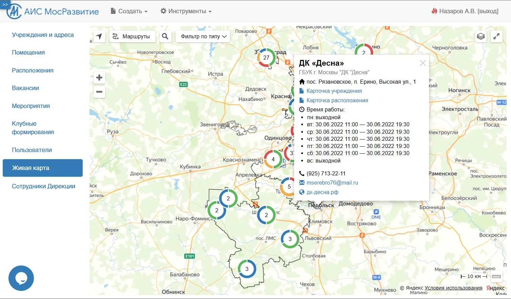
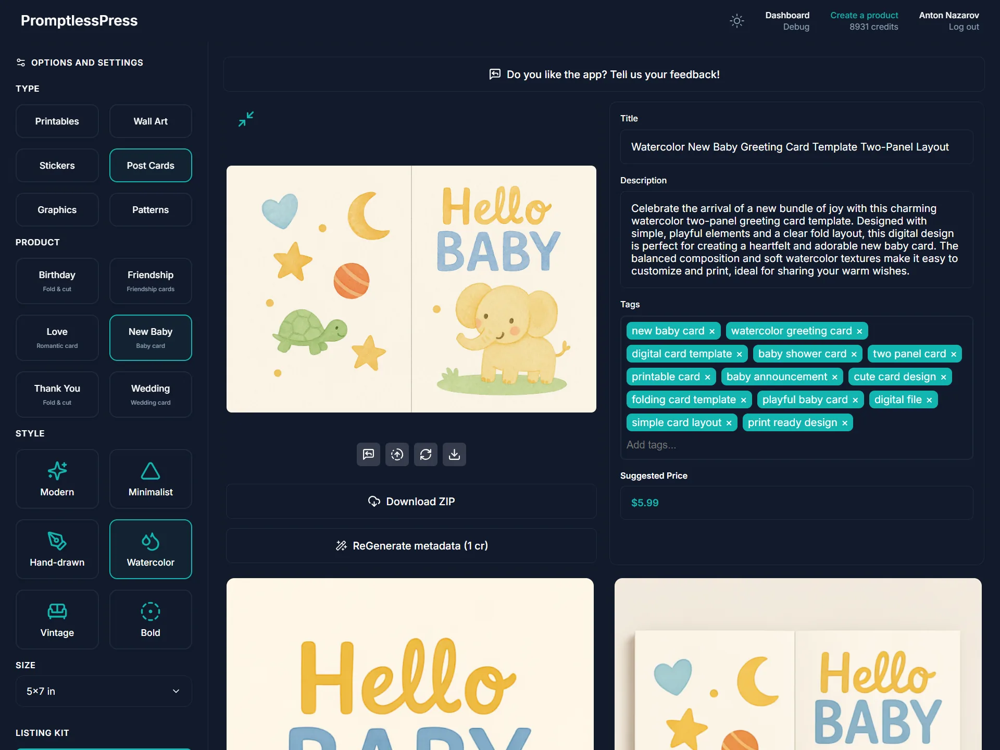
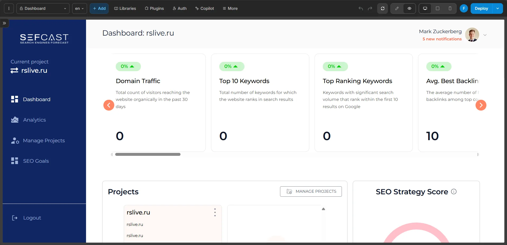
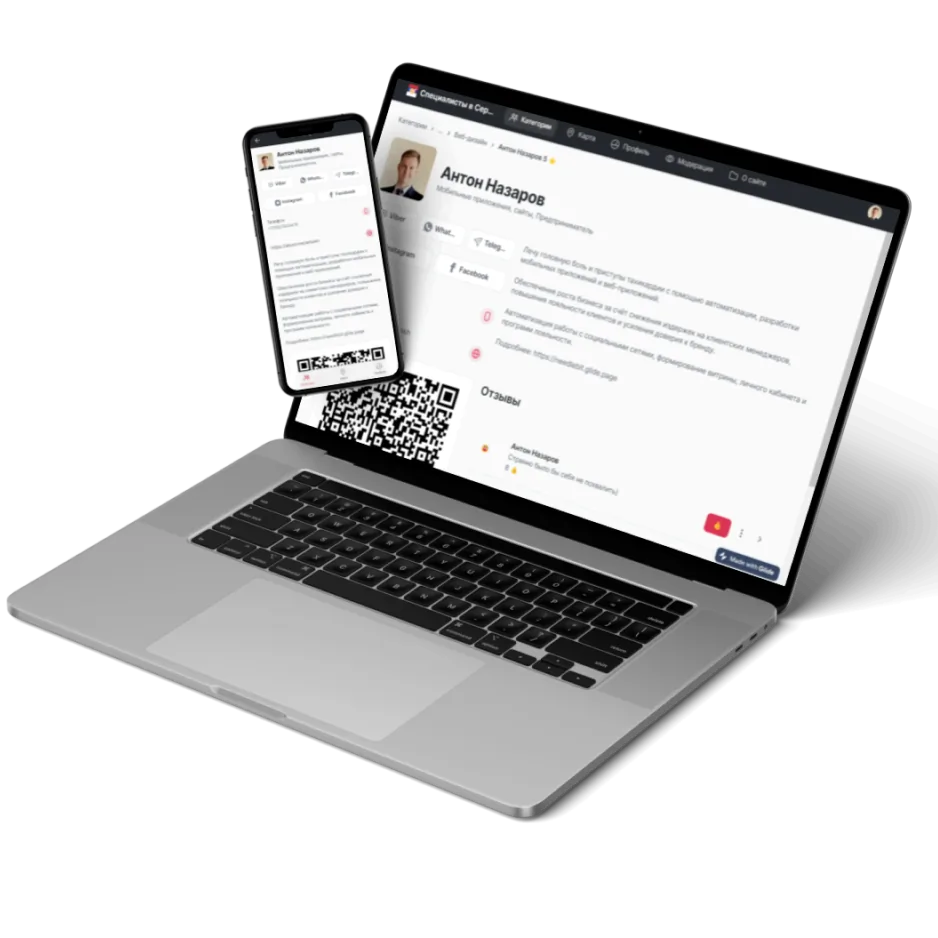
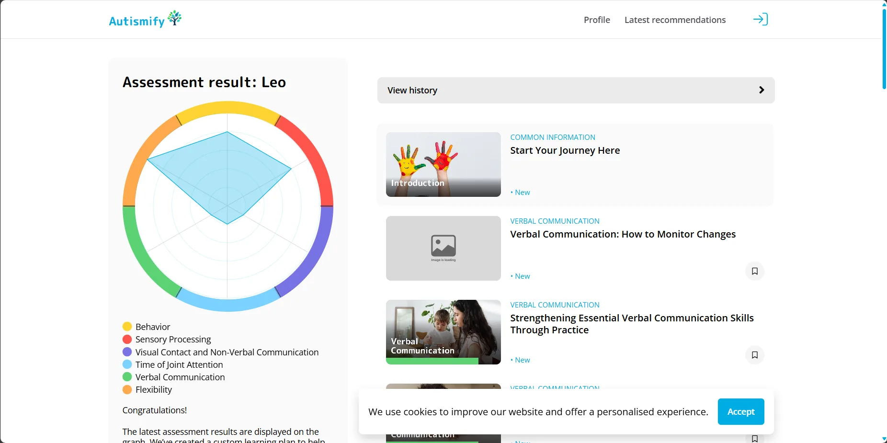
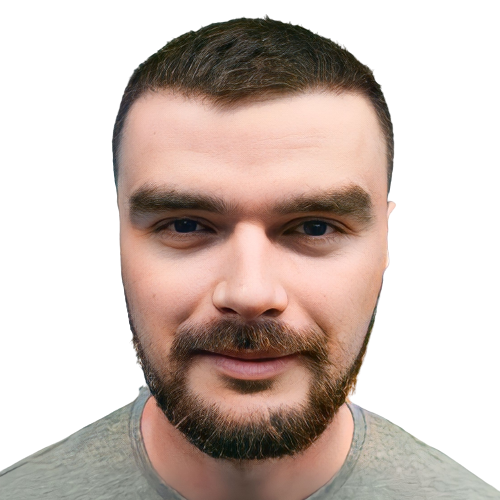
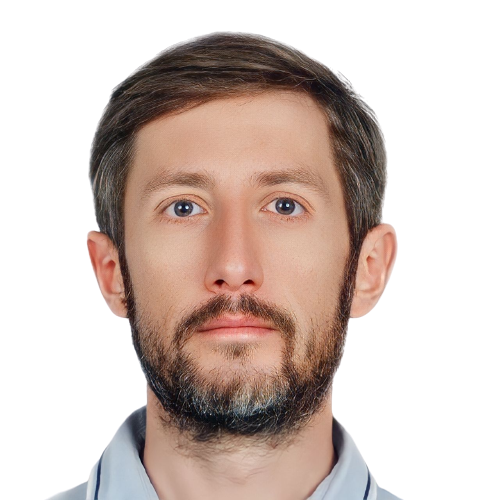
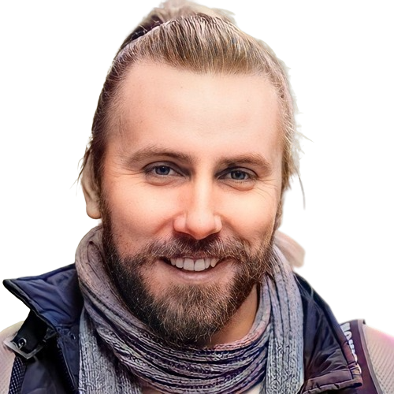

From chaos to a system
We build systems your business can actually run with no developers.
NeedleBit designs internal systems, MVPs, SaaS products, and automation platforms for teams that need structure more than developer chaos.
- Fast to build
- Maintainable by your team
- Designed to survive growth
Why this combination works
Fast-to-ship web product delivery, strong ownership over data and auth, and flexible automation your team can keep evolving.
Business outcomes
Results the business actually feels.
Not feature delivery for its own sake, but operational impact: speed, continuity, lower dependency on individual people, and less human error in the loop.
10x-13x
Revenue growth after system redesign
70,000+
Documents migrated into structured systems
Hours to minutes
Manual operations reduced through automation
Lower dependency
Processes structured so work is less dependent on one employee or one "system person"
Less human factor
AI and automation reduce repetitive decision load, missed steps, and operational inconsistency
More continuity
Teams can replace roles more safely because logic lives in the system, not only in people's heads
The transformation
From scattered tools to systems companies can run.
Most teams do not need another app. They need a system that makes operations visible, stable, and easier to run.
Before
- Google Sheets as the operating system
- Business logic trapped in Bubble or the frontend
- Automations nobody fully understands
- Manual handoffs between email, chat, and forms
- Every change slow, risky, and expensive
After
- Clear data structure and ownership
- Stable backend logic and integrations
- Operational tools your team can actually use
- Automation instead of manual coordination
- Systems that scale without collapsing
What we actually do
What we build, rescue, and restructure.
Production-ready internal systems, MVPs, and SaaS products for operators and founders whose current setup is too fragile, too slow, or too expensive to evolve.
Build
Internal tools, CRM, ERP, and client portals
We turn messy operations into usable systems with proper roles, workflows, visibility, and data design.
Launch
MVP and SaaS product delivery
We help founders ship productized experiences fast, with architecture that can survive past the first release.
Rescue
Broken or slow no-code system recovery
We step in when Bubble, Glide, or ad hoc automations became fragile, slow, or too expensive to keep evolving.
Migrate
Backend architecture with Supabase or Xano
We move critical logic out of spreadsheets and frontend workarounds into a cleaner backend structure.
Automate
n8n and Activepieces business process automation
We replace manual operational loops with dependable workflows, integration guards, and clearer control points.
Who this is for
If this sounds familiar, we should talk.
SMBs running on Sheets plus email
Work moves, but nobody can see the full system and errors hide in handoffs.
Founders who launched quickly and got stuck
The MVP shipped, but changes are now too slow, product confidence is too low, and the next stage feels risky.
Teams trapped in expensive no-code tools
Costs keep rising while the system gets harder to maintain and harder to trust.
Companies depending on one "system person"
Knowledge is concentrated in one head instead of being designed into the product and process.
Why clients come to us
What usually breaks before clients call us.
These are the patterns we see again and again before a rebuild, migration, or system rescue starts.
The system is fragile
Nobody is sure what breaks if one workflow, field, or integration changes.
Every change takes too long
Small requests become expensive because the architecture was never cleaned up.
Data is hard to control
Scattered tools create duplicated, missing, or contradictory information across the business.
Manual work keeps growing
Teams compensate with people, chat, and follow-up instead of systemized operations.
Selected cases
Proof from systems that had to work in the real world.
Not gallery cards. Operational outcomes from platforms rebuilt, migrated, or cleaned up under real business pressure.

Operations
Exit Lead
70,000 historical documents migrated into Supabase
Dual-interface inspection platform connecting field operations, client portal workflows, automated PDF reporting, and device-linked inspection data.

Revenue
Dobri Visarun
Roughly 10x revenue growth in about three months
Turned a fragmented service business into a lightweight PWA with centralized intake, Telegram notifications, and sharply lower client-handling time.

Field ops
Andronyevskaya ERP
Self-hosted ERP with QR workflows and Telegram Mini App login
Combined field tasks, asset logic, role-based administration, and real-time operational flows in one self-hosted system.

Assessments
MetaFox Strengths Explorer
Complex assessment model turned into a usable product
Translated an evolving coaching methodology into a production-ready assessment platform with scoring, peer feedback, visual reports, and PDF delivery.

Government
AIS MosRazvitie
Central reporting and data system for a major cultural network
Modernized a large operational platform for distributed institutions, reporting workflows, moderation, exports, and external data exchange.

AI product
PromptlessPress
AI-powered product generation and export workflow
Built a structured generation system for AI-made digital products with mockups, metadata, packaging, and guarded iteration flows.

SaaS
Sefcast
AI-oriented SEO analytics workspace with reusable UI system
Delivered custom components and a product-wide UI kit for a multi-screen SaaS with dashboards, goal builders, and account workflows.

Community product
Serbia Networking App
Event discovery and contact-exchange product for a local community
Created a mobile-first networking app that connected event discovery, participant onboarding, virtual business cards, and Telegram updates.

Healthtech
Vencer Autismo
Recurring assessment platform with analytics and recommendations
Built a full-stack assessment product with weighted scoring, progress tracking, personalized guidance, and admin-controlled logic.
Healthtech
Vencer Autismo
Recurring assessment platform with analytics and recommendations
Built a full-stack assessment product with weighted scoring, progress tracking, personalized guidance, and admin-controlled logic.
Community product
Serbia Networking App
Event discovery and contact-exchange product for a local community
Created a mobile-first networking app that connected event discovery, participant onboarding, virtual business cards, and Telegram updates.
SaaS
Sefcast
AI-oriented SEO analytics workspace with reusable UI system
Delivered custom components and a product-wide UI kit for a multi-screen SaaS with dashboards, goal builders, and account workflows.
AI product
PromptlessPress
AI-powered product generation and export workflow
Built a structured generation system for AI-made digital products with mockups, metadata, packaging, and guarded iteration flows.
Government
AIS MosRazvitie
Central reporting and data system for a major cultural network
Modernized a large operational platform for distributed institutions, reporting workflows, moderation, exports, and external data exchange.
Assessments
MetaFox Strengths Explorer
Complex assessment model turned into a usable product
Translated an evolving coaching methodology into a production-ready assessment platform with scoring, peer feedback, visual reports, and PDF delivery.
Field ops
Andronyevskaya ERP
Self-hosted ERP with QR workflows and Telegram Mini App login
Combined field tasks, asset logic, role-based administration, and real-time operational flows in one self-hosted system.
Revenue
Dobri Visarun
Roughly 10x revenue growth in about three months
Turned a fragmented service business into a lightweight PWA with centralized intake, Telegram notifications, and sharply lower client-handling time.
Operations
Exit Lead
70,000 historical documents migrated into Supabase
Dual-interface inspection platform connecting field operations, client portal workflows, automated PDF reporting, and device-linked inspection data.
How we work
Clear process. Visible delivery.
Discovery
We define goals, workflows, constraints, and the real source of operational friction.
Clear scope and system understanding.
Architecture design
We design data structure, integrations, permissions, and the operating core before implementation chaos starts.
Technical foundation for implementation.
Build and integrate
We implement backend logic, frontend operations, and automation workflows into one maintainable system.
Working system integrated with your operations.
Handover and support
We document the system, stabilize it in production, and make sure your team can run it after launch.
Maintainable platform with clear next steps.
Testimonials
What clients remember after the build.
Not generic praise. Repeated signals about clarity, reliability, speed, and systems that actually reduce operational drag.
"Significantly increased the efficiency of working with information, reduced the burden on technical teams, and removed the need for training because the interface was intuitive."

State information system project
"High level of professionalism, responsibility, and flexibility of thinking. Anton always sought the best solution and delivered within the specified time."

Aviation-related projects
"A reliable and responsible partner who quickly finds solutions, pays great attention to detail, and consistently delivers high-quality work."
Multi-project collaboration
"Client handling time was minimized, the business grew significantly, and feedback from customers on booking convenience kept coming in."

Travel and tour applications
"Anton is an incredible specialist with a clear vision of the project, strong patience in communication, and an obvious drive to deliver the work at the highest level."
Client recommendation
"Anton helped choose the right technology stack, developed a high-quality solution, and improved the service with strong communication and attention to detail."
Founder, Autismify
"Anton co-created our Strengths Discovery app, owned the full stack from WeWeb to Xano, and contributed not just to implementation but to the product vision itself."
Strengths Discovery App
"Anton is an incredible specialist with a clear vision of the project, strong patience in communication, and an obvious drive to deliver the work at the highest level."
Client recommendation
"A reliable and responsible partner who quickly finds solutions, pays great attention to detail, and consistently delivers high-quality work."
Multi-project collaboration
"Client handling time was minimized, the business grew significantly, and feedback from customers on booking convenience kept coming in."
Travel and tour applications
"High level of professionalism, responsibility, and flexibility of thinking. Anton always sought the best solution and delivered within the specified time."
Aviation-related projects
"Significantly increased the efficiency of working with information, reduced the burden on technical teams, and removed the need for training because the interface was intuitive."
State information system project
"Anton helped choose the right technology stack, developed a high-quality solution, and improved the service with strong communication and attention to detail."
Founder, Autismify
"Anton co-created our Strengths Discovery app, owned the full stack from WeWeb to Xano, and contributed not just to implementation but to the product vision itself."
Strengths Discovery App
System delivery
Architecture-led delivery for systems that hold up.
We work at the intersection of business processes, system architecture, and implementation. The goal is not just to ship something new, but to leave the business with a system it can actually operate, maintain, and scale.
- Rebuilding broken or slow systems
- Backend architecture with Supabase or Xano
- Frontend systems in WeWeb or FlutterFlow
- Automation with n8n or Activepieces
- Integrating fragmented tools into one operating system
FAQ
Questions teams ask before they commit to a rebuild.
No. Many projects start with an audit, rescue, migration, or backend refactor rather than a greenfield build.
Often, yes. In many cases the better move is to preserve the current interface and rebuild the logic behind it.
No. We work with startups, SMBs, service businesses, and operational teams whose systems became too fragmented to support growth.
We typically work with WeWeb or FlutterFlow on the frontend, Supabase or Xano on the backend, and n8n or Activepieces for automation.
Support can include stabilization, improvements, new integrations, architecture refinement, and future feature work.
Low-code is not about speed alone. It is about control, maintainability, and getting a system your team can actually operate.
Need a cleaner operating system?
If the current system is slowing the business down, let's map the next move.
That can mean rebuilding, stabilizing, migrating, or replacing the stack under what you already have without creating another fragile mess.